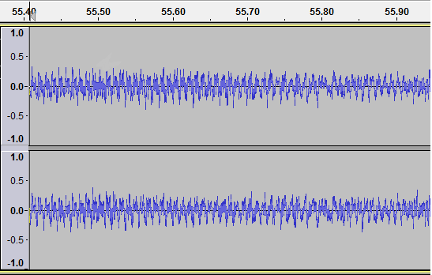
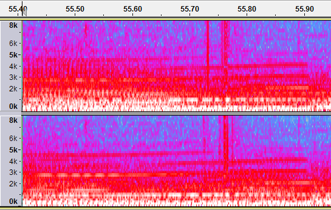
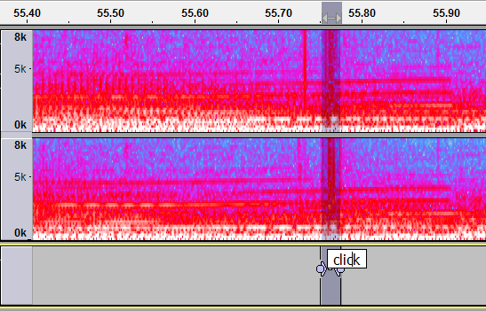
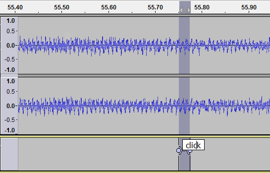
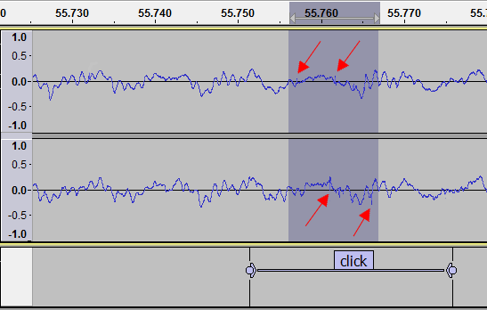
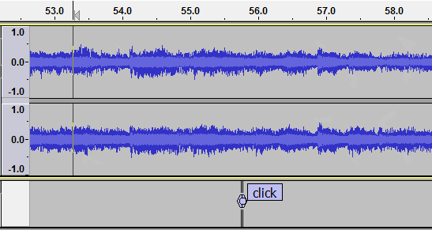
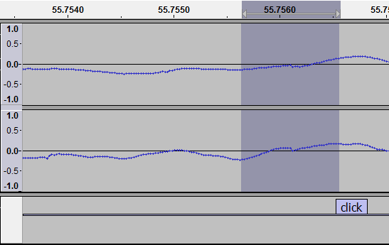
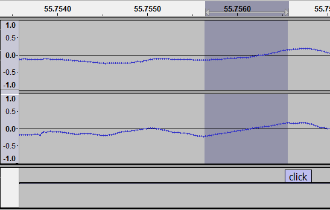
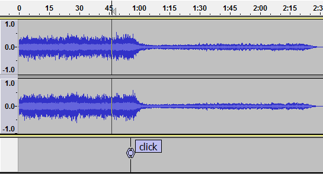

Click removal using the Spectrogram view
In the example the user can hear some clicks but cannot spot them with the default Waveform view despite zooming in quite far. In Waveform view loud clicks often show up as easily seen spikes but smaller, lower amplitude clicks can be very hard to spot without changing to Spectrogram view.
Clicks heard on playback
The user has identified a region where there are some clicks by listening closely on his/her headphones, and has zoomed in to try to spot them but it's very hard to identify them visually in the default waveform view.
- 
Spectrogram view
So we change to the Spectrogram view (use the dropdown menu from the downward-pointing black triangle in the Track Control Panel). This gives us a better chance of seeing clicks because Spectrogram view picks up the greater energy in the click compared to the surrounding audio.
- 
Clicks are pink
In the Spectrogram view the clicks will normally show up as vertical pink (or possibly vertical red) lines. Note that the Spectrogram view has identified two regions of clicks between 55.70 and 55.80 seconds that do not look like clicks in Waveform view.
Because we want to zoom in on these regions later, we will not select from 55.70 to 55.80 seconds but for now, just select the second clicky region. To select this region, click and drag with your mouse and then label the region by using Ctrl + B (on a Mac ⌘ + B ) and typing a label name.
- 
Back to Waveform
Change back to Waveform view as it is easier to work with to make the repairs.
- 
Zoom in to clicks and delete or repair
Now zoom in to see the clicks in the selection more clearly (spot the little vertical spikes in the waveform).
Select a little more than the exact part of the selection that contains clicks by clicking and dragging with your mouse:
- 
Use or its Z shortcut.
Now use the Delete key or the Ctrl + K keyboard shortcut (on a Mac ⌘ + K ) to delete the selection, resulting in the image below:

When you used Zero Crossings this tried to move the selection edges a very small distance to a place where the audio sample dots were at zero amplitude (exactly on the center line). This helps to avoid a click at the new join after deleting the selection, but a residual click is still possible. Therefore the next step coming up will be to listen to the audio after the deletion.
Test the click deletion
Now test the result (this is easier using headphones). Zoom out and play from a little before the point where the selection was deleted. Note that we deliberately did not yet remove the label of the previously clicky region as this helps us to identify the location as we play back for testing.
- 
If you are happy with the audible results then there is no further work to be done on this particular click.
If a discontinuity is heard at the join
If a residual click is heard after deletion despite using Zero Crossings, the click will probably be in one of the channels in a stereo track.
The zoomed in example below shows a very obvious visual discontinuity in both channels of the stereo track resulting from not using Zero Crossings before deletion.
Any residual clicks heard must be repaired. You could use Draw Tool as above, but we will repair the discontinuity shown below automatically using the Repair effect.
Select the discontinuity
Select the waveform around the discontinuity; a maximum of 128 samples (the maximum length for the Repair effect).
- 
Repair the discontinuity
Now use to fix the discontinuity; note the resulting smooth curve.
- 
Final test of the repaired region
As a final step you should audibly test all repairs in the region chosen in Spectrogram view, again preferably on headphones. Zoom out sufficiently and start playback a little earlier, so you can play a reasonable amount of audio either side of the label (which we've still retained to identify the repaired location):
- 
Once you are happy with the results, the label can be deleted if required (see this page).
Undo your repairs if you are unhappy with the result
If you are unhappy with your results you can use repeatedly to revert back to your original unedited audio. Alternatively you may use the command to choose or compare several previous editing states.
Deal with the remaining clicks
Now we have to repeat the process of finding the exact clicks within the first clicky region identified by Spectrogram, repair those clicks and audition the repairs, then likewise with any further clicks in our audio. If you have been making a lot of repairs you may want to take a break and come back to listen to the whole repaired track a little later.